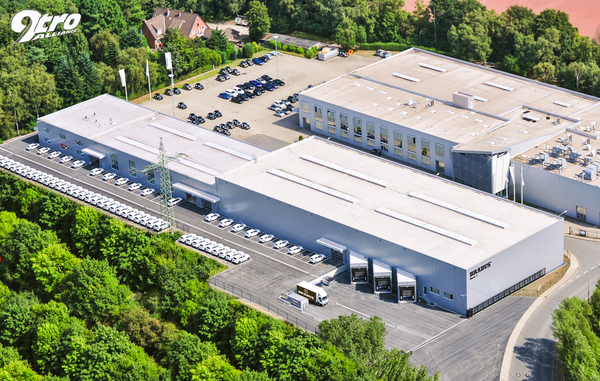
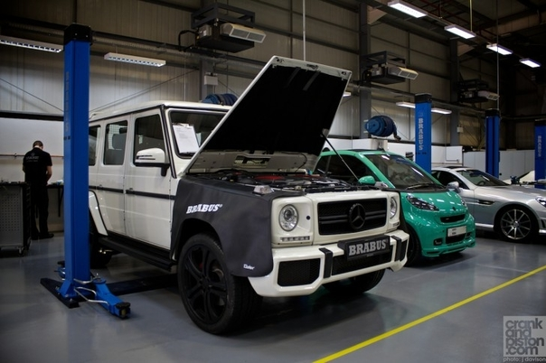
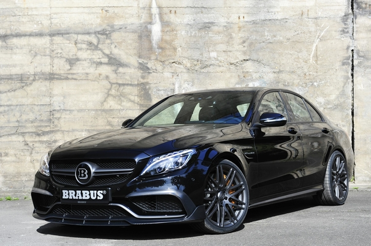
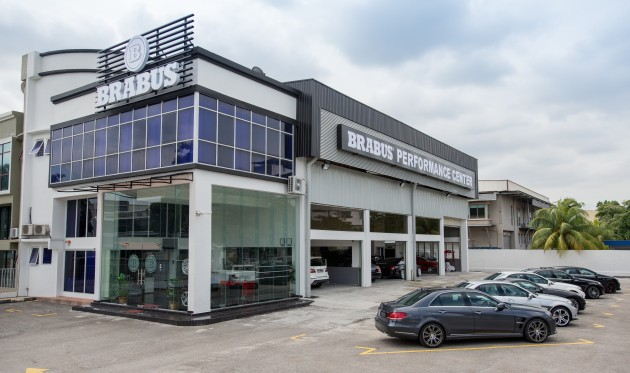

Brabus — компания, расположенная в Германии, специализирующееся
в основном на моторном и кузовном тюнинге, в первую очередь автомобилей
марки Mercedes-Benz, а также других, выпускаемых концерном Daimler,
автомобилей марки Smart и Maybach. Ателье фокусирует внимание на том,
чтобы автомобиль достигал максимальных рабочих характеристик путём увеличения
мощности и крутящего момента.

Ателье ориентировано на дорогой и эксклюзивный тюнинг. Среди простых
программ тюнинга предлагается установка низкопрофильных покрышек, спойлеров,
аэродинамических обвесов, кованых дисков собственного дизайна. Более сложные
модернизации включают модификации технической начинки автомобилей, в частности,
при переработке двигателя растачивается блок двигателя, дорабатывается головка
блока, дорабатываются или ставятся новые поршни, коленвал, клапаны и другие
детали, все двигатели собираются вручную и в конце ставится фирменная табличка с
личной подписью моториста. Также осуществляется доработка интерьера автомобиля на
заказ, установка аксессуаров.

История
Как частное тюнинг-ателье основано в 1977 году Клаусом Бракманом и Бодо Бушманом
в Ботропе, название происходит от сложения начальных букв фамилий её создателей.
Является крупнейшим в мире независимым тюнинговым ателье. В 1999 году стало
подразделением DaimlerChrysler.
